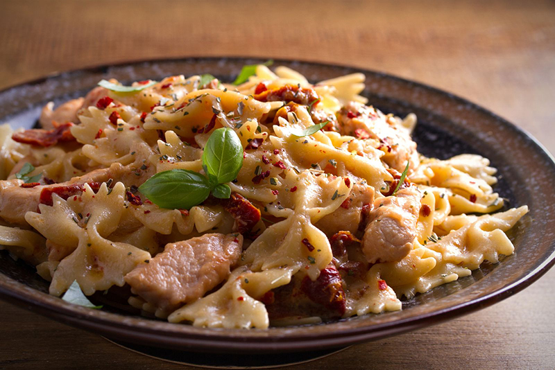

Pikantné cestoviny s kuracím mäsom a sušenými paradajkami
Hlavnou hviezdou tohto jedla sú čili vločky.

Hlavnou hviezdou tohto jedla sú čili vločky.
| Kuchár | Náročnosť | Čas prípravy | Skóre |
|---|---|---|---|
| Adam | 4/10 | 40 min. | 7/10 |
| Adam | 3/10 | 35 min. | 8/10 |
| Priemerné skóre | 7.5/10 | ||
Dúfam, že sa vám tento recept páčil a prinesie vám do kuchyne mnoho radosti a chutných momentov. Ak ho vyskúšate, podeľte sa so svojimi dojmami a nechajte nám komentár. Prajem dobrú chuť a veľa úspechov pri varení!